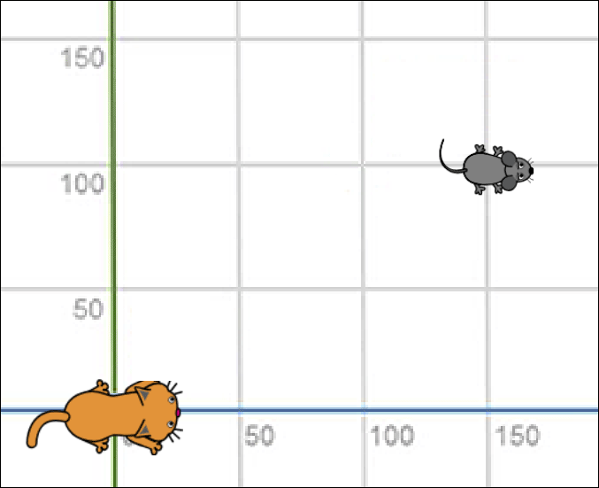
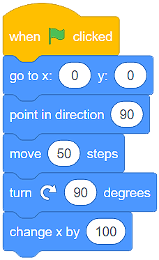

Kretanje¶
Već poznaješ radno okruženje Skreča, umeš da kreiraš likove i odrediš njihov položaj na pozornici. Pravi je trenutak da naučiš da ih pokrećeš koristeći naredbe (blokove) iz kategorije Kretanje (Move). Upotrebljavajući ove blokove bićeš u situaciji da napraviš jednostavne igrice i animacije.
Razlikujemo tri vrste blokova namenjenih kretanju likova:
Blokove za apsolutno kretanje
Blokove za relativno kretanje
Ostale blokove za kretanje
Blokovi za apsolutno kretanje¶
U kategoriji Kretanje (Move), na raspolaganju imaš 4 bloka koja omogućavaju apsolutno kretanje likova.

Upotrebljavaćeš ih u situacijama kada bude potrebno da programiraš likove tako da se kreću do tačno određenog mesta (tačke) na pozornici.
Pojurila mačka miša…
Mačka se nalazi u centru pozornice, a miš u tački (x:150 y:100).
{kind=link}
Podsećamo te da je pozornica pravougaoni prostor širine 480 i visine 360 koraka (piksela). Centar pozornice nalazi se u tački (x:0 y:0).
Ako želiš da mačka ulovi miša dovoljno je upotrebiš blok  .
.
{kind=link}
Ako želiš da lov traje, upotrebi blok  . Time obezbeđuješ da mačka klizi jednu sekundu od tačke (x:0 y:0) do tačke (x:150 y:100).
. Time obezbeđuješ da mačka klizi jednu sekundu od tačke (x:0 y:0) do tačke (x:150 y:100).
Upotrebom blokova  i
i  možeš da simuliraš prikradanje mačke mišu:
možeš da simuliraš prikradanje mačke mišu:

Tačku u kojoj se lik trenutno nalazi (trenutnu vrednost x: i y:) uvek možeš da vidiš ispod pozornice, u okviru liste likova.

- Program A
- Bravo! Mačka je "uhvatila" sve miševe!
- Program B
- Hm.. Savetujemo ti da proučiš lekciju Položaj lika na pozornici.
Q-4: Analiziraj položaj miševa na slici i označi program koji će omogućiti mački da “ulovi” sve miševe.

 Dakle, upotrebom blokova za apsolutno kretanje saopštavaš liku tačno mesto na pozornici na koje treba da stigne.
Dakle, upotrebom blokova za apsolutno kretanje saopštavaš liku tačno mesto na pozornici na koje treba da stigne.
Blokovi za relativno kretanje¶
Relativno kretanje nije određeno mestom u koje lik treba da stigne, već trenutnim položajem lika.
U kategoriji Кretanje, na raspolaganju imaš nekoliko blokova koja omogućavaju relativno kretanje.

U primeru u kome je mačka jurila miša znali smo tačan položaj miša (tačku u kojoj se nalazi). Mnogo su češće situacije u kojima ne znamo tačan položaj likova. U tim slučajevima likove pokrećemo korišćenjem blokova za relativno kretanje.
Кod relativnog kretanja jako je važno da usmerimo (okrenemo) lik u stranu u koju želimo da se kreće. To postižemo povlačenjem strelice po krugu bloka  .
.
Добро је да знаш да у Скречу усмерење ка 0 представља усмерење нагоре, ка 90 удесно, ка 180 надоле, а ка -90 улево.

Trenutno usmerenje lika uvek možeš da vidiš ispod pozornice, u okviru liste likova, u polju Smer.
- Смер: 90 (desno) Položaj: (x:50 y:-100)
- Analiziraj program ponovo. Da li okretanje za 90 stepeni menja usmerenje lika?
- Smer: 180 (dole) Položaj: (x:50 y:100)
- Bravo! Dobro uočavaš kretanje lika!
Q-5: Analiziraj program na slici i označi usmerenje lika, kao i njegov položaj nakon izvršavanja programa.

Dakle, upotrebom blokova za relativno kretanje saopštavaš liku gde treba da se usmeri i kreće u odnosu na njegov trenutni položaj.
Ostali blokovi za kretanje¶
U kategoriji Кretanje, na raspolaganju imaš još 4 bloka koja omogućavaju kretanje likova.

Pozornica je ograničen prostor. Кada lik stigne do ivice (kaže se i ruba) pozornice, prirodno je da se okrene i nastavni kretanje u drugom pravcu ili smeru. Takvo ponašanje lika obezbeđuješ korišćenjem bloka  . Način na koji će lik nastaviti kretanje zavisi od tebe. Ako, u okviru bloka
. Način na koji će lik nastaviti kretanje zavisi od tebe. Ako, u okviru bloka  podesiš da se lik okreće na sve strane, on će nastavniti kretanje okrenut naglavačke. Ovo se neće dogoditi ako iz padajuće liste bloka odabereš levo-desno
podesiš da se lik okreće na sve strane, on će nastavniti kretanje okrenut naglavačke. Ovo se neće dogoditi ako iz padajuće liste bloka odabereš levo-desno  .
.

Trenutni način kretanja lika uvek možeš da vidiš ispod pozornice, u okviru liste likova, u polju Smer (Direction).
Vratimo se na naše likove:  i
i  .
.
Ako ne znamo tačan položaj miša, a želimo da mačka bude usmerena na njega (okrenuta ka njemu), možemo da upotrebimo blok  . Dovoljno je da iz padajuće liste odaberemo lik Miš
. Dovoljno je da iz padajuće liste odaberemo lik Miš  i problem je rešen.
i problem je rešen.
Pokazaćemo ti na primeru kako funkcionišu poslednja dva bloka.
Pojurila mačka miša…
Mačka juri miša, klizeći ka njemu. Miš se neprestano okreće i ide ka kursoru, koji mi pomeramo po pozornici.

Iznad svakog od likova nalaze se skripte koje obezbeđuju opisano ponašanje.
Unapredi gornji program tako što ćeš dodati još jedan lik - jabuku. Neka miš juri jabuku, a mačka miša. Neka se jabuka kreće ka kursoru (kojim mi upravljamo), miš prema jabuci, mačka prema mišu.

Moguće rešenje: